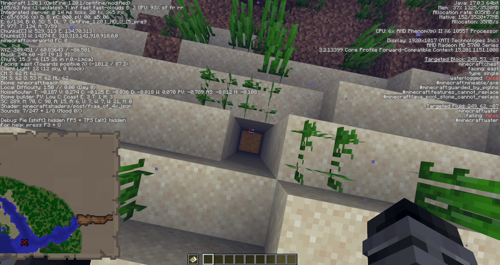

Як швидко знайти скарб
- Насправді це не так важко, як здається.
Де знайти мапу?
Спочатку, треба десь знайти мапу скарбів. Нам потрібна мапа, яку можна знайти в підводних руїнах або затонулих кораблях. В руїнах скрині з мапою знаходяться зазвичай під гравієм. А в кораблі скриня з картою знаходиться в каюті знизу.
Як орієнтуватися по мапі?
Щоб знайти скарб треба як мінімум вміти орієнтуватися за мапою. Натисни F3 і запам’ятовуй: карти такі ж як і в реальному житті. Ну, не зовсім, але північ завжди зверху. Так от, коли відкриваєш вкладку F3 по центру екрана з’являється маленька шкала тримірної системи координат. Ця шкала обертається залежно від того куди ти дивишся. Потрібно, щоб синя лінія шкали дивилася вниз, а червона вправо, як на скріншоті. Тоді, ти будеш дивитися рівно на північ, тобто, якщо ти знизу мапи й скарб вище, треба йти просто прямо.
Якщо дивитися на скріншот, то мені потрібно йти прямо та праворуч.
До речі, ти міг просто подивитися у рядок ‘Facing’, який трохи нище координат. Значення ‘Facing: north’ буде також означати, що ти дивишся на північ. (Дивись скріншот вище)
Як знайти саму скриню?
Після того як мапа почне промалювуватися підійди якомога блище до хрестика, приблизно так:
Далі, знову відкрий вкладку F3 і на цей раз знайди рядок ‘Block’. Тут нам потрібні останні значення, на скріншоті вище це [7 12 10] (це твої координати в поточному чанку). Необхідно пройти так, щоб ці координати стали [9 * 9] (* будь-яке число).
Тепер просто прокопай ~3-5 блоків вниз.
Сподіваюся ти знайшов діаманти)